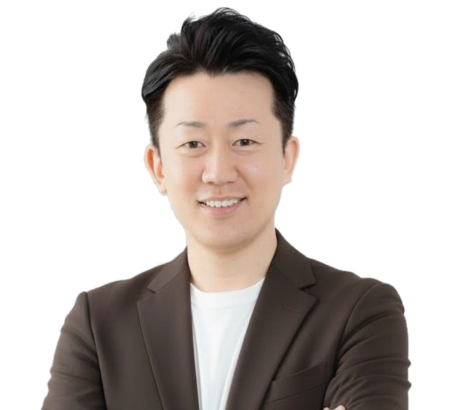
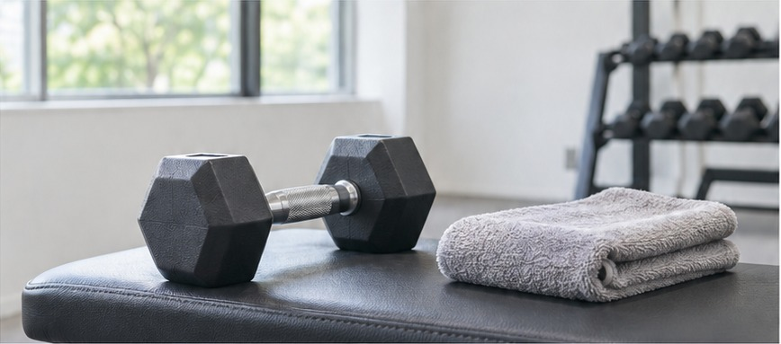
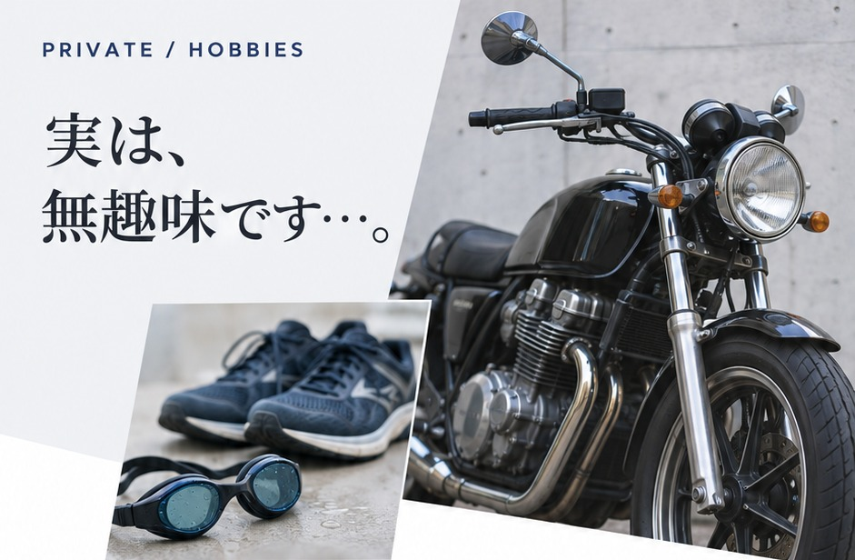
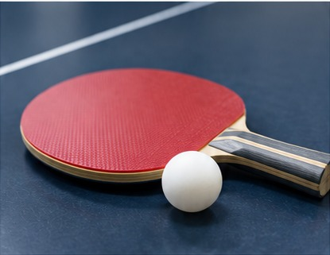
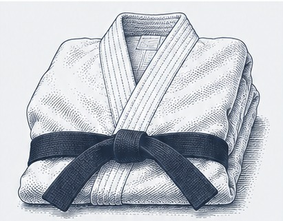

髙橋 嘉人
YOSHITO TAKAHASHI
FC本部代表
地元・福井から、
次の可能性へ。

MESSAGE
新しい挑戦を、一つずつ。
大阪体育大学を卒業後、フィットネス業界へ。
福井・大阪で経験を積み、2016年に
地元・福井でパーソナルジムを開業しました。
コロナ禍を機に脱毛事業に挑戦し、
セルフホワイトニングの導入を経て、
2025年からFC事業の全国展開を進めています。
経験を重ねて、
福井で独立。
学びと現場経験を重ね、地元での開業へ。
2003年に中退。
福井市のフィットネスジムに就職。
知識と経験を積む。

福井でパーソナルジムを開業
パーソナルトレーニングスタジオ
「KiRAN」をオープン。
小・中・高校時代は、福井県鯖江市で過ごしました。
転機から、
新しい事業へ。
脱毛事業へ
約1年間の経営低迷を経て、
脱毛サロン「Liberte」を開業。
株式会社4410 設立
「KiRAN」「Liberte」を運営。
無人セルフモデルを確立し、
多店舗展開へ。
サービスを拡充
セルフホワイトニングを導入。
株式会社ViliV 設立
1月からFC事業の
全国展開を本格始動。
知人の紹介をきっかけに始まったFC展開が、
全国へと広がっています。
2026年4月時点
2029年の目標

独立する前は、バイクや筋トレが好きで、
短い距離ですが、トライアスロンに
出場したこともあります。
仕事中心の、10年ちょっと。
独立してからは仕事中心の生活になり、
「趣味は何ですか？」と聞かれるたびに、
答えに困ってしまいます。
最近は、誘われたら積極的に参加！
ゴルフや釣り、登山など、
夢中になれる趣味を見つけたいと思っています。
おすすめがあれば、
ぜひ教えてください。
NEXT CHALLENGE
福井から全国へ。
そして、海外へ。
最近の関心は、「海外進出」です。
もともとは、福井県内で店舗を増やすことが
目標でした。気づけば、当時は想像もして
いなかったFC事業の全国展開へ。
メイドインジャパンのマシンづくり。
全国展開を進める中で、
オリジナル脱毛マシンも
開発・製造することになりました。
海外からのお声がけも。
最近は海外からもお声がけをいただき、
海外進出も視野に入れて動いています。
まだまだ未知の領域。
新しい可能性に、ワクワクしています。
スポーツが、
ずっと身近に。
体育教師を目指していたこともあり、
運動全般が好きです！

卓球
インターハイ出場

柔道
黒帯
大学卒業後はフィットネスジムに勤務し、
その後、パーソナルジムを開業。
色々なスポーツやトレーニングに取り組んできました。
ここ3年ほどは、サボり気味です…。
学びを、仕事の力に。
運動・健康・食・教育に関する資格と免許。
運動・トレーニング
- 健康運動指導士
- JCCAアドバンスト
トレーナー - SAQインストラクター
- スポーツ心理士
健康・食
- 健康管理士一般指導員
- 健康管理能力検定1級
- 調理師免許
- 食育インストラクター
- 青汁マイスター
教育
- 中学・高校保健体育教員免許
- 高校福祉教員免許